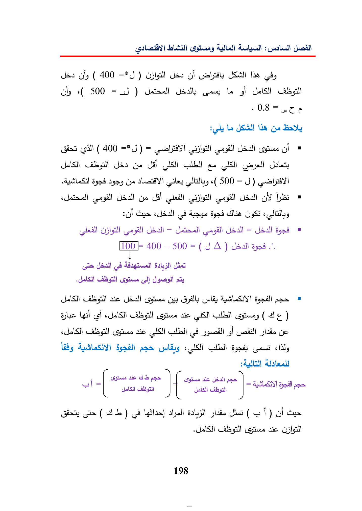

ueloly(400)ddsollaasly«(500=_S)UsaGaryLeghel)CabillLeNeGaBadlyGASsl(400=gals!Udallohabsil)UdaGedalASGlae(ASGallJalenGe«(500=J)als!GeihUdalloYGusAingeSgaddllsUdallUdall=gad400—500=(JA)cisSal)(4Agt)ool)JasCalagillaieGusGyillyGullsLakagillaie)alagillaieISN(28ghGepasGulagapne«lily|sicpanaispasal{islfish=ALS)ane(AIL)Ads(1)ofGeCalegillric198